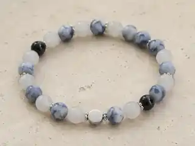
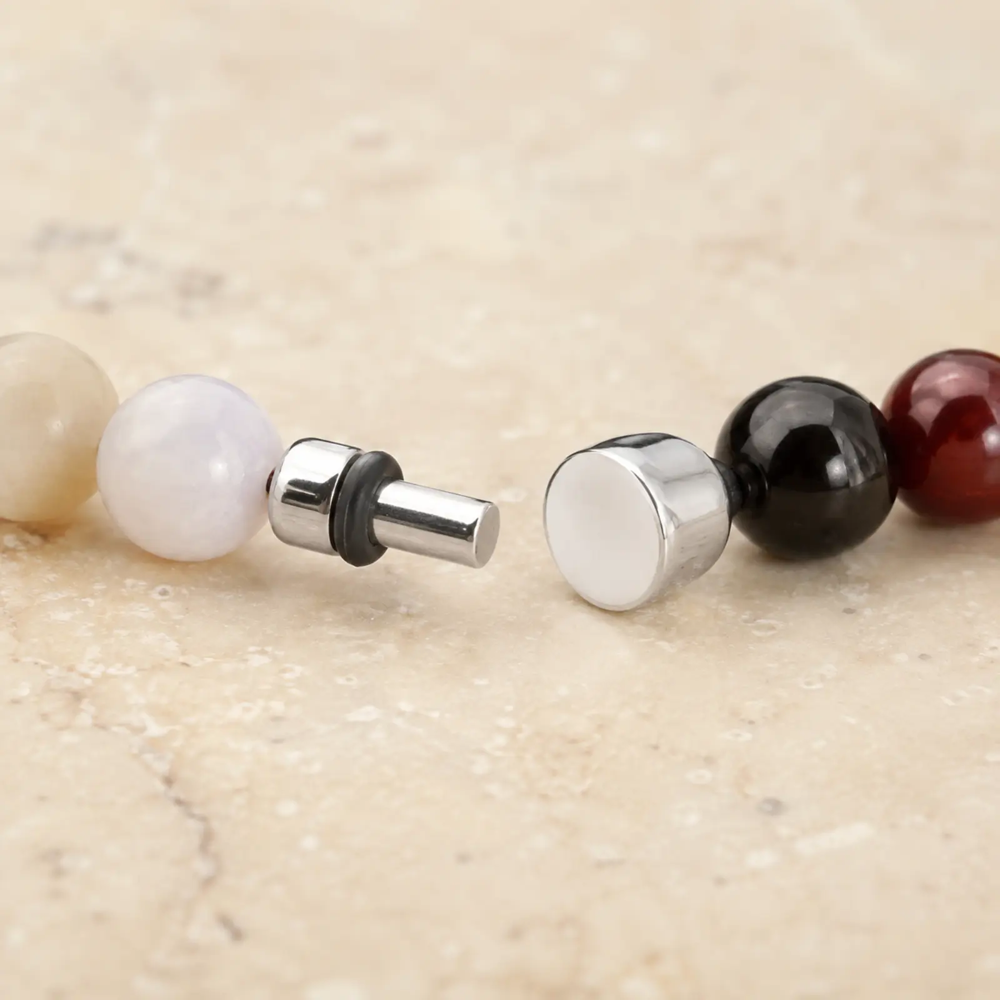

Le style
Net, contemporain
Perlivio Inox
Une lecture fraîche et structurée, pensée pour celles et ceux qui aiment les reflets acier et les contrastes minéraux.

Net, contemporain
Intercalaires aspect inox
Grade inox à confirmer — ne pas revendiquer 316L sans justificatif

Pensé pour évoluer
La Perle Origine et les Perles Socles forment votre première composition. Plus tard, une Perle de Chemin peut remplacer une Socle, qui rejoint alors votre Réserve.
Voir le principe complet →